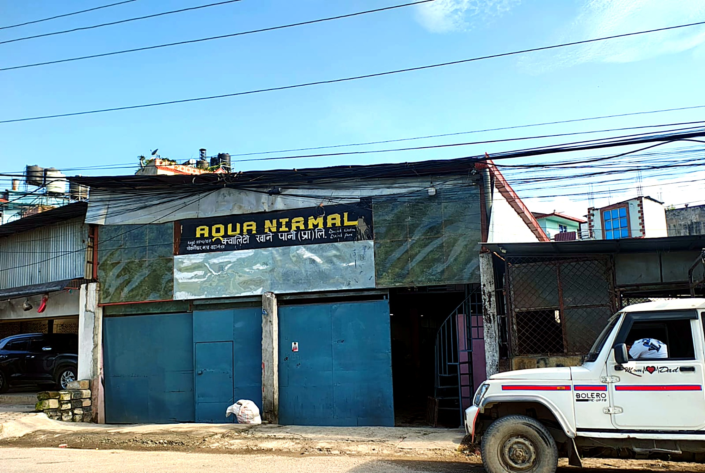

Aqua Nirmal Quality Khane Pani (Pra.) Limited — every batch runs through the same purification stages and checks, whether it's 500 jars or 5,000.
Source water is screened for large particulate before entering the plant.
Removes chlorine, odour and organic compounds.
A semi-permeable membrane strips dissolved salts and heavy metals.
Essential minerals are re-added to bring water back to a healthy TDS range.
Removes bacteria and finer suspended solids the RO stage doesn't catch.
Ultraviolet exposure neutralises any remaining microorganisms before filling.
Jars are ozone-rinsed, filled, and sealed the same day for freshness.
Registered No. 11541/074 with Gokarneshwor Municipality, Ward 8. Replace the placeholders below with your DFTQC/NBSM certificate numbers and link each card to a scanned copy.
Our production line runs quality checks at every stage — not just at the end. Every batch is filled, sealed and dispatched the same day, from RO to sealed jar.
We supply homes, offices and small retailers, with pricing that gets sharper the larger your regular order — talk to us about your volume on WhatsApp.
